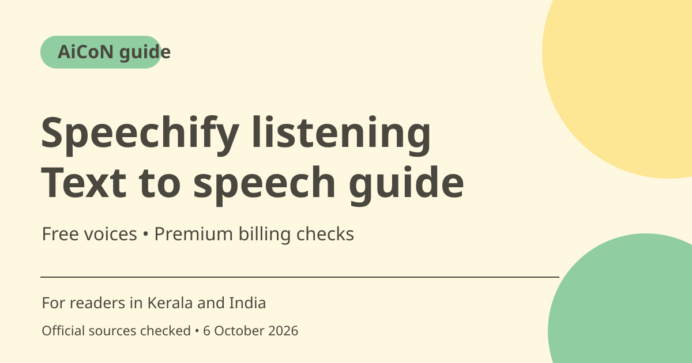

Speechify text to speech: free limits and PDF listening
Speechify reads text aloud on the web and through its apps. Its consumer Free plan lists ten basic voices and playback up to 1.5x. Premium adds natural voices and other tools. Check the plan before assuming PDF listening, summaries or dictation have identical free access.

What is Speechify?
Speechify turns written material into spoken audio. Its official pages describe reading web pages, PDFs and documents, with web and app routes. Listening can complement reading for a long article or study material. It does not verify the content or turn a scanned document into guaranteed accurate text.
Who is it useful for in Kerala and India?
Students, busy readers and people who prefer audio can try listening to their own notes or a public article. Choose a voice and speed you can understand rather than the fastest setting. Check pronunciation of names, dates, Malayalam words and mixed-language text with a sample. A broad language count does not establish good performance on every document.
Free and Premium are different
The consumer pricing page lists Free with speeds up to 1.5x, ten basic voices and text-to-speech features only. Premium lists 1,000+ natural voices, 60+ languages, speeds up to 5x, Scan and Listen, summaries, chat and voice typing. The public online tool also advertises natural voices, but that is not proof that the complete Premium library is an unlimited Free entitlement.
Do not confuse consumer and API plans
Speechify has separate products, including an API for developers. An API trial measured in characters is not the same as the consumer Free listening plan. This guide concerns the reader-facing app and online listening experience, not a promise that developer credits unlock all mobile features.
Check the document before listening
OCR or document extraction can omit a table, misread a number or reorder text. Follow the original while testing the audio and check headings, formulas, citations and important figures. Listening is useful for review, but for an exam, contract or medical document, confirm the written original rather than relying only on spoken output.
Privacy and subscription caution
Before uploading, make sure you are permitted to share the file with the service. Remove confidential client, financial or health information if it is not needed. The pricing page has monthly and yearly options and shows US$29 per month. Do not accept a trial or annual discount without reading the full billed amount, renewal and cancellation route.
How to use it, step by step
- Open speechify.com or its official online text-to-speech page. Decide whether you need the web tool or app.
- Start with a short non-sensitive text sample. The online guide says you can type or paste text, choose a voice and language, then press play.
- Use a comfortable speed and compare the spoken result with the original, especially names and numbers.
- For PDF or document listening, follow the current upload option in the chosen app and check that the extracted text is complete.
- If using a scanned page, inspect recognition errors before relying on its audio. Check whether Scan and Listen requires Premium in your account.
- Review which voices and additional features your plan includes. Free text-to-speech does not promise Free summaries, dictation or the whole natural-voice library.
- Before Premium, inspect monthly versus annual billing, full total, trial end and renewal. Keep the original document for verification.
Cost, eligibility and limits
| Free consumer plan | ₹0. Pricing lists ten basic voices, up to 1.5x listening and text-to-speech features only. |
|---|---|
| Premium reference | US$29 per month is displayed. At an rough ~₹96.43/USD estimate, that is about ~₹2,796. Confirm billing toggle, full charge, taxes and local price; this is not a live FX or India checkout quote. |
| Plan distinction | API pricing and public-tool access are separate from consumer subscription allowances. |
| Document limits | Language quality, OCR accuracy and feature access need testing on your own sample. No guaranteed Malayalam voice or unlimited uploads are promised. |
Frequently asked questions
Does Free include AI summaries and dictation?
The checked consumer pricing lists Free as text-to-speech only; those additional tools are described under Premium.
Can I listen faster?
Free lists up to 1.5x; Premium lists up to 5x. Choose a speed that preserves understanding.
Is developer API Free the same plan?
No. Developer API allowances and consumer app subscriptions are different products.
Official sources
- PTI 6 October exchange-rate report used for rough INR estimates
- Consumer pricing
- Online tool and steps
- Official access
Checked 6 October 2026. Features and prices can change. This is a guide, not a personal product test.